건축산업기사 (2011-06-12 기출문제)
1과목: 건축계획
1. 숑바르 드 로브(Chombard de Lawve)가 설정한 표준기준에 따를 경우, 4인 가족을 위한 주택의 주거면적은?
- 32m2
- 56m2
- 64m2
- 128m2
(정답률: 76%)

2. 주택단지의 단위 중 인보구의 중심시설은?
- 파출소
- 초등학교
- 고등학교
- 어린이 놀이터
(정답률: 82%)
3. 다음 중 사무소 건축에서 기준층 층고의 결정 요소와 가장 거리가 먼 것은?
- 채광률
- 사용목적
- 공조시스템
- 엘리에비터의 설치 대수
(정답률: 83%)
4. 사무소 건축의 코어 형식 중 중심코어형에 대한 설명으로 옳은 것은?
- 구조코어로서 바람직한 형식이다.
- 기준층 바닥면적이 작은 경우에 주로 사용된다.
- 2방향 피난에 이상적인 관계로 방재 및 피난상 유리하다.
- 편코어형으로부터 발전된 것으로 자유로운 사무공간을 구성할 수 있다.
(정답률: 78%)
5. 연면적 200m2을 초과하는 공동주택에 설치하는 복도의 유효너비는 최소 얼마 이상으로 하여야 하는가? (단, 양옆에 건축법상 거실이 있는 복도의 경우)
- 0.9m
- 1.2m
- 1.8m
- 2.4m
(정답률: 64%)
6. 학교 건축에서 단층 교사에 대한 설명으로 옳지 않은 것은?
- 구조 계획이 단순하다.
- 화재 및 재해시 피난이 용이하다.
- 대지의 이용률이 높으며 효율적인 공간이용이 가능하다.
- 외부에서 교실로의 직접 출입이 가능하므로 학습활동의 실외 연장이 가능하다.
(정답률: 76%)
7. 초등학교 교실배치에 관한 설명 중 옳지 않은 것은?
- 동 학년의 교실은 집약배치 한다.
- 저학년은 되도록 1층에 두도록 한다.
- 1, 2학년은 출입구를 별도로 만들어 주는 것이 좋다.
- 저학년에서 평면형은 주위에 개방되어 일렬로 나란히 잇댄 것이 가장 이상적이다.
(정답률: 66%)
8. 탑상형(Tower Type) 공동주택에 대한 설명으로 옳지 않은 것은?
- 각 세대에 시각적인 개방감을 줄 수 있다.
- 다른 주거동에 미치는 일조의 영향이 적다.
- 단지내의 랜드마크(Land Mark)적인 역할이 가능하다.
- 각 세대에 일조 및 채광 등의 거주환경을 균등하게 제공할 수 있다.
(정답률: 74%)
9. 다음 설명에 알맞은 연립주택의 유형은?
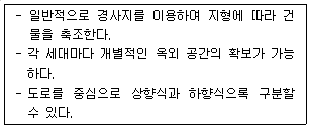
- 타운 하우스(Town House)
- 로우 하우스(Low House)
- 테라스 하우스(Terrace House)
- 파티오 하우스(Patio House)
(정답률: 87%)
10. 다음 설명에 알맞은 공장건축의 레이아웃 형식은?
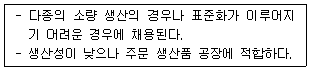
- 제품중심 레이아웃
- 공정중심 레이아웃
- 고정식 레이아웃
- 혼성식 레이아웃
(정답률: 77%)
11. 기계공장의 지붕 형식으로 톱날지붕을 채용하는 가장 주된 이유는?
- 실내 소음을 감소시키기 위해
- 실내 조도를 일정하게 하기 위해
- 우수 처리를 용이하게 하기 위해
- 실내 온 ㆍ 습도는 일정하게 하기 위해
(정답률: 77%)
12. 다음 중 상점의 숍 프런트(Shop Front) 구성형식을 개방형으로 할 경우 가장 적합한 상점은?
- 서점
- 이발소
- 귀금속점
- 카메라점
(정답률: 65%)
13. 독립성 확보가 가장 용이한 아파트의 평면형식은?
- 집중형
- 계단실형
- 편복도형
- 중복도형
(정답률: 78%)
14. 학교의 실내체육관 계획에 대한 설명 중 옳지 않은 것은?
- 강당과 겸하더라도 체육관의 목적에 치중한다.
- 표준적으로 농구코트를 둘 수 있는 크기가 필요하다.
- 채광을 위해 장축을 동/서 방향으로 계획하는 것이 좋다.
- 벽면에 창문을 설치할 경우 실외 측에 철망을 붙이고 천창보다는 측창으로 계획하는 것이 좋다.
(정답률: 64%)
15. 사무소 건축에서 Open Plan 배치의 일종으로 배치할 때 직위 서열보다 의사 전달과 작업의 흐름을 중요시하여 배치하는 실 단위계획은?
- 아트리움(atrium)
- 2중지역 배치(double zone layout)
- 개실 시스템(individual room system)
- 오피스 랜드스케이핑(office landscaping)
(정답률: 81%)
16. 다음 중 쇼핑센터를 구성하는 주요 요소로 볼 수 없는 것은?
- 핵점포
- 몰(mall)
- 코트(court)
- 터미널(termianl)
(정답률: 77%)
17. 사무소 건축의 엘리베이터 배치계획에 대한 설명중 옳지 않은 것은?
- 주요 출입구 홀에 직접 면해서 배치하는 것이 좋다.
- 각 층의 위치는 되도록 동선이 짧고 단순하게 계획 하는 것이 좋다.
- 승강기의 출발층은 1개소로 한정하는 것이 운영면에서 효율적이다.
- 엘리베이터를 직선형으로 배치할 경우 6대 이하로 하는 것이 원칙이다.
(정답률: 70%)
18. 상점의 동선계획에 대한 설명 중 옳지 않은 것은?
- 고객동선은 직원동선과 명확하게 구분, 분리하는 것이 좋다.
- 직원동선은 되도록 짧게 하여 보행 및 서비스 거리를 최대한 줄이도록 계획한다.
- 상품의 내용 안내를 위해 고객 출입구와 상품 반출ㆍ출입구가 일치하도록 한다.
- 피난에 관련된 동선은 고객이 쉽게 인지하도록 위치 설정 및 접근성을 고려하여 계획한다.
(정답률: 81%)
19. 상점 진열창(Show Window)의 반사방지를 위한 대책과 가장 거리가 먼 것은?
- 창에 외기를 통하지 않도록 한다.
- 진열창 내부 밝기를 외부보다 밝게 한다.
- 차양을 설치하여 진열창 외부에 그늘을 만들어 준다.
- 유리면을 경사지게 하거나 특수한 경우 곡면유리를 사용한다.
(정답률: 77%)
20. 주택의 거실 계획에 대한 설명 중 옳지 않은 것은?
- 거실에서 문이 열린 침실의 내부가 보이지 않도록 한다.
- 거실의 연장을 위하여 가급적 정원 사이에 테라스를 둔다.
- 통로로서의 이용을 원활하게 하기 위해 가급적 각실의 중심에 배치한다.
- 가능한 동측이나 남측에 배치하여 일조 및 채광을 충분히 확보할 수 있도록 한다.
(정답률: 81%)
2과목: 건축시공
21. 건설도급계약제도 중에서 단가도급에 관한 설명으로 옳지 않은 것은?
- 공사금액을 구성하는 물량에 따라 정산하는 방식이다.
- 긴급공사 시 적용되는 방식이다.
- 공사완공시까지의 총공사비를 예측하기 어렵다.
- 설계변경에 의한 수량의 증감이 어렵다.
(정답률: 56%)
22. 타일 붙이기 공법 중 거푸집면 타일먼저붙이기 공법의 종류에 해당하지 않는 것은?
- 타일시트법
- 줄눈대법
- 유니트 타일 붙이기법
- 줄눈틀법
(정답률: 55%)
23. 다음 중 네트워크 공정표에 대한 설명으로 옳지 않은 것은?
- CPM고정표는 네트워크 공정표의 한 종류이다.
- 요소작업의 시작과 작업기간 및 작업완료점을 막대그림으로 표시한 것이다.
- PERT공정표는 일정계산시 단계(Event)를 중심으로 한다.
- 공사계획의 전모와 공사전체의 파악이 용이하다.
(정답률: 72%)
24. 콘크리트 부어 넣기에서 진동기를 사용하는 가장 큰 목적은?
- 재료분리 방지
- 작업능률 촉진
- 경화작용 촉진
- 콘크리트의 밀실화 유지
(정답률: 70%)
25. 목구조의 보강철물에 관한 설명으로 옳지 않은 것은?
- 왕대공과 평보의 접합부는 안장쇠로 보강한다.
- 처마도리와 깔도리 및 평보의 접합부는 주걱볼트로 보강한다.
- 평보와 ㅅ자보의 접합부는 볼트로 보강한다.
- 토대와 기둥의 접합부는 띠쇠로 보강한다.
(정답률: 41%)
26. 콘크리트의 거푸집 공법의 발전방향으로 옳지 않은 것은?
- 거푸집의 대형화
- 설치의 단순화를 위한 유닛(unit)화
- 부재의 경량화 및 단면설계의 효율화
- 전용회수 감소
(정답률: 55%)
27. 알루미늄 샤시에 관한 기술 중 옳지 않은 것은?
- 스틸 샤시에 비해 내화성이 약하다.
- 알칼리에 강하므로 설치시 오염의 염려가 없다.
- 비중은 철의 약 1/3로서 여닫음이 경쾌하다.
- 일반적으로 녹슬지 않고 사용 연한이 길다.
(정답률: 72%)
28. 페인트칠의 경우 초벌과 재벌 등을 바를 때마다 그 색을 약간씩 다르게 하는 이유는?
- 희망하는 색을 얻기 위해서
- 색이 진하게 되는 것을 방지하기 위해서
- 착색안료를 낭비하지 않고 경제적으로 하기 위해서
- 공정에 따라 칠을 하였는지 안하였는지를 구별하기 위해서
(정답률: 79%)
29. 무근콘크리트의 동결을 방지하기 위한 목적으로 사용되는 것은?
- 제2산화철
- 산화크롬
- 이산화망간
- 염화칼슘
(정답률: 79%)
30. 방수 모르타르 바름공법에 대한 설명으로 옳지 않은 것은?
- 상당한 두께가 필요할 때에는 2~3회로 나누어 바른다.
- 바름 면은 매회 거칠게 해야 한다.
- 보통 모르타르보다 바탕과의 접착력이 매우 크다.
- 총 두께는 12~25mm 정도로 한다.
(정답률: 37%)
31. 다음 용어 중 지반조사와 관계 없는 것은?
- 표준관입시험
- 보링테스트
- 골재의 표면적 시험
- 지내력 시험
(정답률: 74%)
32. 해수의 작용을 받는 콘크리트 공사에서 해수작용의 구분에 따른 콘크리트 피복두께의 대소관계를 옳게 나타낸 것은?
- 해상 대기중 ＜ 물보라 지역 ＜ 해중
- 해상 대기중 ＜ 해중 ＜ 물보라 지역
- 물보라 지역 ＜ 해상 대기중 ＜ 해중
- 물보라 지역 ＜ 해중 ＜ 해상 대기중
(정답률: 43%)
33. Power shovel의 1시간당 추정 굴착 작업량을 다음 조건에 따라 구하면?
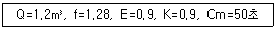
- 89.6m3/h
- 90.6m3/h
- 98.6m3/h
- 108.6m3/h
(정답률: 58%)
34. 벽돌쌓기법 중 길이쌓기와 마구리쌓기가 번갈아 나오는 방식으로 통줄눈이 많으나 아름다운 외관이 장점인 벽돌쌓기 방식은?
- 미식 쌓기
- 영식 쌓기
- 불식 쌓기
- 화란식 쌓기
(정답률: 63%)
35. 다음 공정계획에 관련된 용어의 설명 중 옳지 않은 것은?
- 작업(activity) - 프로젝트를 구성하는 작업단위
- 결합점(node) - 네트워크의 결합점 및 개시점, 종료점
- 소요시간(duration) - 작업을 수행하는데 필요한 시간
- 플로우트(float) - 결합점이 가지는 전체 여유시간
(정답률: 63%)
36. 다음 중 세로 규준틀을 가장 많이 사용하는 공사는?
- 토공사
- 조적공사
- 철근콘크리트공사
- 철골공사
(정답률: 79%)
37. 도면과 같은 화살표 다이어그램(arrow diagram)에서 크리티컬 패스(Critical path)는?
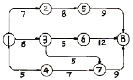
- ①-②-⑤-⑧
- ①-③-⑥-⑧
- ①-③-⑦-⑧
- ①-④-⑦-⑧
(정답률: 60%)
38. 아스팔트 방수법에 관한 설명 중 옳지 않은 것은?
- 콘크리트 등의 모체를 완전건조시켜야 한다.
- 보수시에 결함부분을 발견하기가 쉽지 않다.
- 보호층을 견실하게 해야 한다.
- 모체의 신축에 대하여 불리하다.
(정답률: 45%)
39. 프리스트레스트 공사 시 유의사항으로 옳지 않은 것은?
- PS강재는 되도록 열의 영향을 많이 받은 강재를 사용하는 것이 좋다.
- 콘크리트를 타설할 때 시드(sheath)의 내부에 시멘트 페이스트가 들어가 막히지 않도록 주의한다.
- 정착장치의 지압면은 긴장재와 수직이 되도록 한다.
- 덕트 내에 PS그라우트를 주입할 때 빈틈이 없이 잘 충전해야 한다.
(정답률: 69%)
40. 철근의 용접법 중 구조용 이음으로 사용하기 곤란한 용접은?
- 플러시버트
- 아크용접
- 가스압접
- 가스용접
(정답률: 63%)
3과목: 건축구조
41. 유효두께 d = 400mm인 철근콘크리트 기초판에서 2방향전단에 저항하기 위한 위험단면의 둘레길이는? (단, 기둥의 단면은 500 × 500mm)
- 1600 mm
- 2000 mm
- 3000 mm
- 3600 mm
(정답률: 35%)
42. KBC2009에 따른 현장치기콘크리트 중 흙에 접하거나 옥외의 공기에 직접 노출되는 콘크리트의 최소피복두께 값으로 옳은 것은? (단, 사용철근의 지름의 D13임)
- 20mm
- 30mm
- 40mm
- 50mm
(정답률: 35%)
43. 그림에서 반력 Rc가 0 이 되려면 B점의 집중하중 P는 몇 kN 인가?
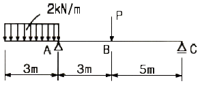
- 3 kN
- 6 kN
- 9 kN
- 12 kN
(정답률: 31%)
44. 편심하중을 받는 단주에서 하중작용점이 core section안에서 밖으로 이동한다면 응력 분포는 어떻게 되는가?
- 압축응력이 증가한다.
- 비틀림이 감소한다.
- 응력이 발생하지 않는다.
- 인장응력이 발생한다.
(정답률: 42%)
45. 한변의 길이가 a인 정사각형 단면을 그림 [A] 및 [B]와 같이 놓았을 때 도형 [A] : [B]의 단면계수비로서 옳은 것은?
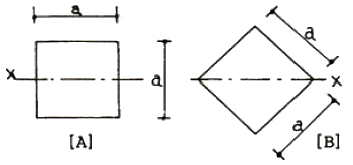
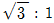
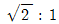
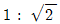
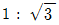
(정답률: 37%)
46. 철근콘크리트의 설계에서 철근의 부착강도에 영향을 주지 않는 것은?
- 콘크리트 피복두께
- 콘크리트 압축강도
- 철근의 외부표면 돌기
- 철근의 강도
(정답률: 65%)
47. 다음 구조물에서 A지점의 휨모멘트 값은?
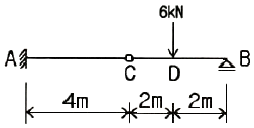
- 8 kN·m
- -8 kN·m
- 12 kN·m
- -12 kN·m
(정답률: 42%)
48. 독립기초 설계시 탄성체에 가까운 경질 점토에 하중이 작용하였을 경우 지중응력 분포도는?
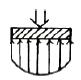
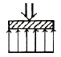
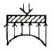
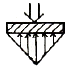
(정답률: 62%)
49. 건축물의 구조계획에서 구조체 자중의 감소에 따른 이점이 아닌 것은?
- 풍하중에 대한 건물의 전도 방지
- 기둥축력의 감소에 따른 기둥의 단면 감소
- 휨재 설계 시 장스팬 가능
- 경제적인 기초설계
(정답률: 53%)
50. 그림과 같은 보에서 휨모멘트 값이 0인 곳의 개수는?
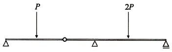
- 3
- 4
- 5
- 6
(정답률: 40%)
51. 그림과 같은 부정정보에서 보 중앙의 휨모멘트는? (단, 보의 휨강도 EI는 일정하다.)
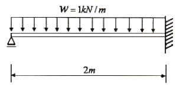
- 0.10kN·m
- 0.15kN·m
- 0.20kN·m
- 0.25kN·m
(정답률: 28%)
52. 철근콘크리트 구조에 고장력 이형철근을 사용하는 이유로 옳지 않은 것은?
- 원형철근보다 부착력이 크다.
- 인장내력이 강하다.
- 원형철근보다 피복두께를 적게 할 수 있다.
- 철근량이 적어져 콘크리트 타설이 쉽다.
(정답률: 40%)
53. 기성콘크리트말뚝을 타설할 때 그 중심간격은 말뚝머리지름의 최소 몇 배 이상으로 하여야 하는가?
- 1.5배
- 2.5배
- 3.5배
- 4.5배
(정답률: 58%)
54. KBC2009에 따른 인장력을 받는 이형철근의 최소겹침이음길이에 대한 내용으로 옳지 않은 것은? (단, ld는 인장이형철근의 정착길이)
- ld는 초과철근량에 대한 보정계수는 적용하지 않는 다.
- A급 이음은 1.5ld 이상이어야 한다.
- B급 이음은 1.3ld 이상이어야 한다.
- 최소 겹침이음길이는 300mm 이상이어야 한다.
(정답률: 32%)
55. 원형 단면의 부재에 생기는 최대 전단응력도로 옳은 것은? (단, A는 단면적, V는 전단력)
- 2V / 3A
- 3V / 2A
- 3V / 4A
- 4V / 3A
(정답률: 42%)
56. 철근콘크리트 기둥에서 띠철근(Hoop)을 넣는 가장 큰 이유는?
- 주근의 좌굴방지
- 콘크리트의 부착력 증대
- 압축강도 증가
- 수축변형 방지
(정답률: 72%)
57. 단면적 A, 길이 ℓ인 탄성체에 축방향력 P가 작용하여 △ℓ만큼 늘어났다. 이때 응력도, 변형도, 탄성계수를 각각 σ, ε, E라 한다면 다음 관계식 중 옳지 않은 것은?
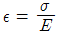
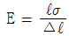
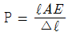
- P = εAE
(정답률: 50%)
58. 압축이형철근(D29)의 기본 정착길이로 알맞은 것은? (단, fck =24MPa, fy =350MPa)
- 220mm
- 320mm
- 420mm
- 520mm
(정답률: 40%)
59. 지반에 관한 설명으로 옳지 않은 것은?
- 지반의 내력이 부족할 때에는 지정을 하여 내력을 증진시킨다.
- 지지 지반이 깊은 곳에 있을 때에는 말뚝지정을 한다.
- 지반은 수위가 변동되어 낮아지면 압밀침하를 일으킨다.
- 표준관입시험의 N값이 높을수록 지반의 상태는 느슨하다.
(정답률: 66%)
60. 강도설계법에 의한 철근콘크리트 설계 시 강도감소계수 값으로 옳지 않은 것은?
- 인장지배단면 - 0.85
- 전단력 및 비틀림모멘트 - 0.75
- 압축지배단면(띠철근기둥) - 0.70
- 변화구간 단면 - 0.65 ~ 0.85
(정답률: 64%)
4과목: 건축설비
61. 전기설비 용량이 각가 80kW, 120kW의 부하설비가 있다. 그 수용률이 70%인 경우 최대수용전력은?
- 90kW
- 100kW
- 140kW
- 200kW
(정답률: 59%)
62. 배수수직관 내의 압력변화를 방지 또는 완화하기 위해, 배수수직관으로부터 분기 ㆍ 입상하여 통기수직관에 접속하는 통기관은?
- 습통기관
- 신정통기관
- 루프통기관
- 결합통기관
(정답률: 47%)
63. 배수 수직과내가 부압으로 되는 곳에 배수 수평지관이 접속되어 있을 경우, 배수 수평지관내의 공기가 수직관쪽으로 유인됨에 따라 봉수가 이동하여 손실되는 현상은?
- 분출 작용
- 모세관 현상
- 유도사이폰 작용
- 자기사이폰 작용
(정답률: 60%)
64. LPG 용기의 보관온도는 최대 얼마 이하로 하여야 하는가?
- 20℃
- 30℃
- 40℃
- 50℃
(정답률: 73%)
65. 간선의 배선방식에 대한 설명 중 옳지 않은 것은?
- 평행식은 사고 발생시 파급되는 범위가 좁다.
- 루프식은 공급신뢰도가 높아 중요 부하에 적용된다.
- 평행식은 각 층의 분전반까지 단독으로 배선되므로 전압강하가 평균화된다.
- 나뭇가지식은 요구되는 전선의 굵기가 가늘어 대규모 건축물에 주로 사용된다.
(정답률: 64%)
66. 피보호물을 연속된 망상도체나 금속판으로 싸는 방법으로 뇌격을 받더라도 내부에 전위차가 발생하지 않으므로 건물이나 내부에 있는 사람에게 위해를 주지 않는 피뢰설비 방식은?
- 케이지 방식(완전보호)
- 수평도체 방식(증강보호)
- 돌침 방식(보통보호)
- 가공지선 방식(간이보호)
(정답률: 82%)
67. 다음의 습공기 선도상의 변화과정을 옳게 설명한 것은?
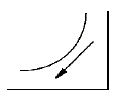
- 가열가습과정
- 가열감습과정
- 냉각가습과정
- 냉각감습과정
(정답률: 77%)
68. 다음의 공기조화방식 중 에너지 절감적인 측면에서 가장 유리한 것은?
- 멀티존 유닛방식
- 이중덕트 정풍량방식
- 단일덕트 정풍량방식
- 단일덕트 변풍량방식
(정답률: 52%)
69. 다음 중 상점 내부의 조명용 광원으로 가장 부적절한 것은?
- 형광등
- 할로겐등
- 백열전구
- 고압나트륨등
(정답률: 68%)
70. 증기보일러 주변 배관방식에서 하트포드 접속방식을 채택하는 이유는?
- 소음을 줄이기 위하여
- 보일러수의 유실을 방지하기 위하여
- 보일러의 열효율을 향상시키기 위하여
- 보일러내의 스케일 발생을 줄이기 위하여
(정답률: 43%)
71. 아파트 세대 내의 거실에 있어서 스프링클러헤드를 설치하는 천장 등의 각 부분으로부터 하나의 스프링클러헤드까지의 수평거리는 최대 얼마 이하로 하여야 하는가?
- 1.7m
- 2.3m
- 2.5m
- 3.2m
(정답률: 39%)
72. 다음 중 환기횟수에 대한 설명으로 가장 알맞은 것은?
- 하루 동안의 환기량을 실의 용적으로 나눈 값이다.
- 한시간 동안의 환기량을 실의 용적으로 나눈 값이다.
- 한시간 동안에 창문을 여닫는 회수를 의미한다.
- 하루 동안에 공조기를 작동하는 회수를 의미한다.
(정답률: 70%)
73. 베르누이의 정리에 대한 설명으로 옳은 것은?
- 압축성이고 점성이 있는 유체의 유동에 통용된다.
- 에너지보존의 법칙을 유체의 흐름에 적용한 것이다.
- 관로내에서 위치가 높은 곳이 낮은 곳보다 전수두가 크다.
- 관로내에서 위치가 낮은 곳이 높은 곳보다 전수두가 크다.
(정답률: 52%)
74. 증기난방설비에서 방열기나 증기코일 및 배관내에 공기가 고였을 경우에 대한 설명으로 옳지 않은 것은?
- 증기나 응축수의 흐름을 방해한다.
- 장치내에 있는 공기가 열전달을 저하시켜 예열이 지연된다.
- 공기의 분압만큼 증기의 실질압력이 높아져 증기의 온도가 내려간다.
- 방열기나 증기코일의 내벽면에 공기막을 형성하여 전열을 저해한다.
(정답률: 52%)
75. 고압전로에 시설하는 피뢰기에 요구되는 접지공사의 종류는?
- 제1종 접지공사
- 제2종 접지공사
- 제3종 접지공사
- 특별 제3종 접지공사
(정답률: 64%)
76. 온도 0℃, 길이 50m인 강관에 탕(湯)이 흘러 80℃까지 온도가 상승한 경우 강관의 팽창량은? (단, 강관의 선팽창계수는 1.1 × 10-5으로 한다.)
- 11mm
- 22mm
- 44mm
- 88mm
(정답률: 47%)
77. 냉방부하를 계산하는데 있어서 현열과 잠열을 동시에 고려하여야 하는 것에 해당하지 않는 것은?
- 인체의 발생열량
- 벽체로부터의 취득열량
- 극간풍에 의한 취득열량
- 외기의 도입으로 인한 취득열량
(정답률: 50%)
78. 연결송수관설비의 주배관의 구경은 최소 몇 mm이상으로 하여야 하는가?
- 50mm
- 65mm
- 80mm
- 100mm
(정답률: 39%)
79. 옥내소화전의 설치개수가 가장 많은 층의 설치개수가 7개인 건축물에 요구되는 옥내소화전설비의 수원의 최소 저수량은?(2021년 04월 01일 개정된 규정 적용됨)
- 3m3
- 2.6m3
- 5.2m3
- 13m3
(정답률: 67%)
80. 다음 중 배수트랩에 해당하지 않는 것은?
- U 트랩
- 벨 트랩
- 버킷 트랩
- 드럼 트랩
(정답률: 39%)
5과목: 건축관계법규
81. 노외주차장에서 주차형식에 따른 차로의 너비 기준으로 옳은 것은? (단, 출입구가 2개 이상인 경우)
- 평행주차 - 3.3m 이상
- 교차주차 - 4.5m 이상
- 직각주차 - 5.0m 이상
- 60도 대향주차 - 5.0m 이상
(정답률: 57%)
82. 공동주택과 오피스텔의 난방설비를 개별난방방식으로 하는 경우에 대한 기준 내용으로 옳지 않은 것은?
- 보일러의 연도는 내화구조로서 공동연도로 설치할 것
- 공동주택의 경우에는 난방구획마다 내화구조로 된 벽 ㆍ 바닥과 갑종방화문으로 된 출입문으로 구획할 것
- 보일러실과 거실사이의 출입구는 그 출입구가 닫힌 경우에는 보일러가스가 거실에 들어갈 수 없는 구조로 할 것
- 보일러는 거실외의 곳에 설치하되, 보일러를 설치하는 곳과 거실사이의 경계벽은 출입구를 제외하고는 내화구조의 벽으로 구획할 것
(정답률: 33%)
83. 노외주차장의 구조 및 설비기준에 따라 노외주차장에 출입구를 설치할 경우, 출입구의 최소 너비는? (단, 주차대수규모가 50대 미만인 경우)
- 3.5 미터
- 5.0 미터
- 5.5 미터
- 6.0 미터
(정답률: 69%)
84. 건축허가 대상 건축물이라 하더라도 국토해양부령으로 정하는 바에 따라 신고를 하면 건축허가를 받은 것으로 보는 경우에 해당하지 않는 것은?(오류 신고가 접수된 문제입니다. 반드시 정답과 해설을 확인하시기 바랍니다.)
- 바닥면적의 합계 50m2의 증축
- 바닥면적의 합계 80m2의 재축
- 바닥면적의 합계 60m2의 개축
- 연면적 200m2이고 층수가 3층인 건축물의 대수선
(정답률: 69%)
85. 문화 및 집회시설 중 공연장의 개별 관람석 바닥면적이 500m2일 경우 개별 관람석 출구의 유효너비의 합계는 최소 얼마 이상이어야 하는가?
- 2m
- 3m
- 4m
- 5m
(정답률: 61%)
86. 원칙적으로 조경 등의 조치를 하여야 하는 건축물의 대지면적 기준은?
- 100m2 이상
- 200m2 이상
- 300m2 이상
- 400m2 이상
(정답률: 73%)
87. 건축허가 신청시 에너지절약계획서를 제출하여야 하는 대상 건축물 기준으로 옳지 않은 것은?
- 판매시설로서 그 용도에 사용되는 바닥면적의 합계가 3,000제곱미터 이상인 건축물
- 숙박시설로서 그 용도에 사용되는 바닥면적의 합계가 2,000제곱미터 이상인 건축물
- 운동시설 중 실내수영장으로서 당해 용도에 사용되는 바닥면적의 합계가 500제곱미터 이상인 건축물
- 교육연구시설 중 연구소로서 당해 용도에 사용되는 바닥면적의 합계가 2,000제곱미터 이상인 건축물
(정답률: 29%)
88. 연면적 200제곱미터를 초과하는 건축물에 설치하는 계단에 관한 기준 내용으로 옳지 않은 것은?
- 너비가 3미터를 넘는 계단에는 계단의 중간에 너비 1.5미터 이내마다 난간을 설치할 것
- 높이가 3미터를 넘는 계단에는 높이 3미터 이내마다 너비 1.2미터 이상의 계단참을 설치할 것
- 높이가 1미터를 넘는 계단 및 계단참의 양옆에는 난간(벽 또는 이에 대치되는 것 포함)을 설치할 것
- 계단의 바닥 마감면부터 상부 구조체의 하부 마감면까지의 연직방향의 높이는 2.1미터 이상으로 할 것
(정답률: 53%)
89. 다음은 건축선에 따른 건축제한에 관한 기준 내용이다. ( )안에 알맞은 것은?
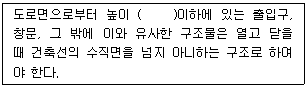
- 3.0 m
- 3.5 m
- 4.0 m
- 4.5 m
(정답률: 64%)
90. 각 층의 거실면적이 2,000m2인 10층 호텔을 건축하고자 할 때 설치하여야 하는 승용승강기의 최소 대수는? (단, 8인승 승강기를 설치하는 경우)
- 3대
- 4대
- 5대
- 6대
(정답률: 52%)
91. 주차장의 일반형 주차단위구획의 크기 기준으로 옳은 것은? (단, 평행주차형식의 경우)
- 너비 2.0미터 이상, 길이 6.0미터 이상
- 너비 2.3미터 이상, 길이 5.0미터 이상
- 너비 1.7미터 이상, 길이 4.5미터 이상
- 너비 2.0미터 이상, 길이 5.0미터 이상
(정답률: 58%)
92. 건축법상 건축물과 해당 건축물의 용도의 연결이 옳지 않은 것은?
- 도서관 - 교육연구시설
- 운전학원 - 자동차 관련 시설
- 안마시술소 - 제2종 근린생활시설
- 식물원 - 동물 및 식물 관련 시설
(정답률: 49%)
93. 지하식 노외주차장의 차로에 관한 기준 내용으로 옳지 않은 것은?
- 높이는 주차바닥면으로부터 2.3m 이상으로 하여야한다.
- 경사로의 종단경사도는 직선 부분에서는 17%를 초과하여서는 아니된다.
- 경사로의 종단경사도는 곡선 부분에서는 15%를 초과하여서는 아니된다.
- 같은 경사로를 이용하는 주차장의 총주차대수가 50대 이하인 경우 곡선 부분은 자동차가 5m 이상의 내변 반경으로 회전할 수 있도록 하여야 한다.
(정답률: 62%)
94. 건축물의 설비기준 등에 관한 규칙상의 기준에 적합하게 피뢰설비를 설치하여야 하는 건축물의 높이 기준은?
- 10미터 이상
- 20미터 이상
- 30미터 이상
- 40미터 이상
(정답률: 74%)
95. 건축물의 연면적 중 주차장으로 사용되는 부분이 70%일 경우, 이 건축물을 주차전용건축물로 볼 수 있는 주차장외의 용도에 해당하지 않는 것은?
- 판매시설
- 운수시설
- 운동시설
- 의료시설
(정답률: 60%)
96. 도시계획시설 또는 도시계획시설예정지에 건축하는 가설 건축물에 관한 기준 내용으로 옳지 않은 것은?
- 조적조가 아닐 것
- 철근콘크리트조가 아닐 것
- 철골철근콘크리트조가 아닐 것
- 판매시설로서 분양을 목적으로 건축하는 건축물이 아닐 것
(정답률: 61%)
97. 공동주택 중 아파트에 설치하여야 하는 대피공간에 관한 기준 내용으로 옳은 것은?
- 대피공간은 바깥의 공기와 접하지 않을 것
- 대피공간은 실내의 다른 부분과 방화구획으로 구획될 것
- 대피공간의 바닥면적은 각 세대별로 설치하는 경우에는 3제곱미터 이상일 것
- 대피공간의 바닥면적은 인접 세대와 공동으로 설치하는 경우에는 5제곱미터 이상일 것
(정답률: 50%)
98. 공동주택의 건축허가 신청시 건축물의 용적률에 대한 기준을 완화하여 적용받을 수 있는 리모델링이 쉬운 구조에 해당하지 않는 것은?
- 개별 세대 안에서 구획된 실의 크기를 변경할 수 없을 것
- 각 세대는 인접한 세대와 수평 방향으로 통합하거나 분할할 수 있을 것
- 각 세대는 인접한 세대와 수직 방향으로 통합하거나 분할할 수 있을 것
- 구조체에서 건축설비, 내부 마감재료 및 외부 마감 재료를 분리할 수 있을 것
(정답률: 50%)
99. 기계식주차장의 사용검사의 유효기간과 정기검사의 유효기간은?
- 사용검사 : 2년, 정기검사 : 2년
- 사용검사 : 2년, 정기검사 : 3년
- 사용검사 : 3년, 정기검사 : 2년
- 사용검사 : 3년, 정기검사 : 3년
(정답률: 53%)
100. 다음의 초고층 건축물의 정의에 관한 기준 내용중 ( )안에 알맞은 것은?
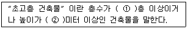
- ① 50, ② 150
- ① 50, ② 200
- ① 60, ② 150
- ① 60, ② 200
(정답률: 68%)